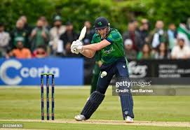
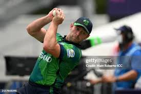

Ireland T20I Team
Competitive team with growing presence in T20 cricket.
About Ireland T20I Team
Country: Ireland
Home Ground: Various (e.g., Malahide Cricket Ground, Dublin)
Captain: Paul Stirling
Coach: Heinrich Malan
Ireland’s T20I team is known for its resilience and competitive spirit, making waves in global tournaments.
Ireland Players
Paul Stirling (C)
Captain, opening batsman.
Andy Balbirnie
Batsman, reliable opener.
Lorcan Tucker
Wicketkeeper-batsman, middle-order.

Harry Tector
Batsman, rising star.
Curtis Campher
All-rounder, pace bowler.
George Dockrell
All-rounder, left-arm spinner.
Gareth Delany
All-rounder, leg-spinner.
Mark Adair
Bowler, pace bowler.
Josh Little
Bowler, left-arm pacer.

Ben White
Spinner, leg-spinner.
Craig Young
Bowler, pace bowler.